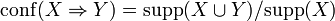
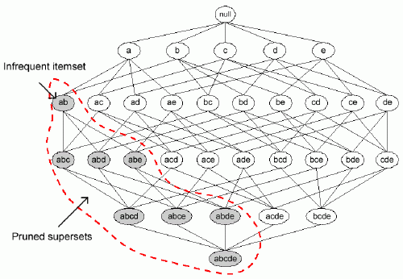

Association Analysis
Introduction
Association analysis is a technique that can find interesting relationships hidden in large data sets. The relationships are then expressed in the form of association rules. A common example is market basket data for a supermarket. You would commonly extract strong relationships between items like peanut butter and jelly. The classic association analysis algorithm is the A priori algorithm. It has three main components: the a priori principle, frequent itemset generation, and rule generation. Also important to association analysis is the idea of support and confidence. Support of an itemset is defined as the proportion of transactions in the data set which contain that itemset. Confidence determines how frequently the item set in question appears in the item sets that contain the support for that itemset.
Figure 1. Confidence expressed in terms of support (supp).
A Priori Principle
The A Priori principle is, "If an itemset is common, then all of its subsets must also be frequent." The A Priori principle is used to reduce the computational complexity of the algorithm because it does not need to count every possible itemset combination. Used in combination with support counts we can remove many possible itemsets. See below for an example of how A Priori support based pruning works.
Figure 2. A Priori Principle support based pruning
Frequent Itemset Generation
Frequent itemset generation is the process of generating frequent itemsets without have to count all the possible combinations in a data set. Combined with support based pruning this greatly reduces the computational complexity of the A Priori algorithm. A common way of doing this is the Fk-1XFk-1 method. Below is an example of this method.

Figure 3. Example of Fk-1XFk-1 method
The method works by taking the Fk-1 frequent itemset and merging them only when the Fk-2 first items are identical. In the example this {Bread, Diapers} and {Bread, Milk} merge into {Bread, Diapers, Milk}. It is important to also keep your frequent itemsets sorted lexicographically so that you avoid duplication of frequent itemsets. As long as the newly generated meet the support threshold then the itemset generation continues until you reach your maximum itemset size or you do not generate a new itemset that exceeds the support threshold.
Rule Generation
The last step of the A Priori algorithm is to generate association rules. For each frequent k-itemset you can generate 2k-2 rules, ignoring rules with empty antecedents and precedents. All these rules already meet the support threshold because otherwise they would have be pruned earlier. Now we use confidence to determine which rules have low confidence and prune those.

Figure 4. Confidence based pruning of rules.
Strength and Weaknesses
The strength of association analysis is that it can find patterns in large data sets simply and has easy to understand output. The weakness is that it works best for market basket data, but does not take into account if a customer at the super market bought one loaf of bread or 100. Also the rules outputted usually need to be manually searched for meaningful rules. The algorithm has no way of providing only the rules you are interested in, or knowing which associations are meaningless to your domain.
Figure 1. src= http://en.wikipedia.org/wiki/Association_rule_learning
Figure 2. src= http://www.inf.ed.ac.uk/undergraduate/projects/mathiasengvall/
Figure 3&4. src= http://www-users.cs.umn.edu/~kumar/dmbook/ch6.pdf